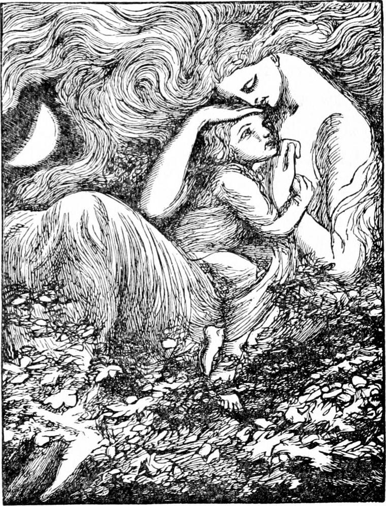
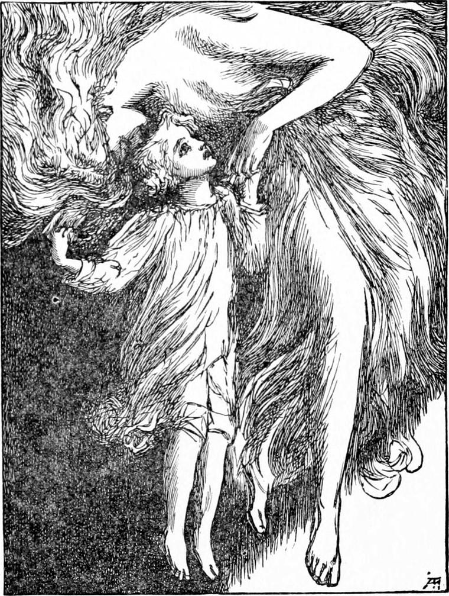

MY READERS will not wonder that, after this, I did my very best to gain the friendship of Diamond. Nor did I find this at all difficult, the child was so ready to trust. Upon one subject alone was he reticent—the story of his relations with North Wind. I fancy he could not quite make up his mind what to think of them. At all events it was some little time before he trusted me with this, only then he told me everything. If I could not regard it all in exactly the same light as he did, I was, while guiltless of the least pretence, fully sympathetic, and he was satisfied without demanding of me any theory of difficult points involved. I let him see plainly enough, that whatever might be the explanation of the marvellous experience, I would have given much for a similar one myself.
On an evening soon after the thunderstorm, in a late twilight, with a half-moon high in the heavens, I came upon Diamond in the act of climbing by his little ladder into the beech-tree.
“What are you always going up there for, Diamond?” I heard Nanny ask, rather rudely, I thought.
“Sometimes for one thing, sometimes for another, Nanny,” answered Diamond, looking skywards as he climbed.
“You'll break your neck some day,” she said.
“I'm going up to look at the moon to-night,” he added, without heeding her remark.
“You'll see the moon just as well down here,” she returned.
“I don't think so.”
“You'll be no nearer to her up there.”
“Oh, yes! I shall. I must be nearer her, you know. I wish I could dream as pretty dreams about her as you can, Nanny.”
“You silly! you never have done about that dream. I never dreamed but that one, and it was nonsense enough, I'm sure.”
“It wasn't nonsense. It was a beautiful dream—and a funny one too, both in one.”
“But what's the good of talking about it that way, when you know it was only a dream? Dreams ain't true.”
“That one was true, Nanny. You know it was. Didn't you come to grief for doing what you were told not to do? And isn't that true?”
“I can't get any sense into him,” exclaimed Nanny, with an expression of mild despair. “Do you really believe, Diamond, that there's a house in the moon, with a beautiful lady and a crooked old man and dusters in it?”
“If there isn't, there's something better,” he answered, and vanished in the leaves over our heads.
I went into the house, where I visited often in the evenings. When I came out, there was a little wind blowing, very pleasant after the heat of the day, for although it was late summer now, it was still hot. The tree-tops were swinging about in it. I took my way past the beech, and called up to see if Diamond were still in his nest in its rocking head.
“Are you there, Diamond?” I said.
“Yes, sir,” came his clear voice in reply.
“Isn't it growing too dark for you to get down safely?”
“Oh, no, sir—if I take time to it. I know my way so well, and never let go with one hand till I've a good hold with the other.”
“Do be careful,” I insisted—foolishly, seeing the boy was as careful as he could be already.
“I'm coming,” he returned. “I've got all the moon I want to-night.”
I heard a rustling and a rustling drawing nearer and nearer. Three or four minutes elapsed, and he appeared at length creeping down his little ladder. I took him in my arms, and set him on the ground.
“Thank you, sir,” he said. “That's the north wind blowing, isn't it, sir?”
“I can't tell,” I answered. “It feels cool and kind, and I think it may be. But I couldn't be sure except it were stronger, for a gentle wind might turn any way amongst the trunks of the trees.”
“I shall know when I get up to my own room,” said Diamond. “I think I hear my mistress's bell. Good-night, sir.”
He ran to the house, and I went home.
His mistress had rung for him only to send him to bed, for she was very careful over him and I daresay thought he was not looking well. When he reached his own room, he opened both his windows, one of which looked to the north and the other to the east, to find how the wind blew. It blew right in at the northern window. Diamond was very glad, for he thought perhaps North Wind herself would come now: a real north wind had never blown all the time since he left London. But, as she always came of herself, and never when he was looking for her, and indeed almost never when he was thinking of her, he shut the east window, and went to bed. Perhaps some of my readers may wonder that he could go to sleep with such an expectation; and, indeed, if I had not known him, I should have wondered at it myself; but it was one of his peculiarities, and seemed nothing strange in him. He was so full of quietness that he could go to sleep almost any time, if he only composed himself and let the sleep come. This time he went fast asleep as usual.
But he woke in the dim blue night. The moon had vanished. He thought he heard a knocking at his door. “Somebody wants me,” he said to himself, and jumping out of bed, ran to open it.
But there was no one there. He closed it again, and, the noise still continuing, found that another door in the room was rattling. It belonged to a closet, he thought, but he had never been able to open it. The wind blowing in at the window must be shaking it. He would go and see if it was so.
The door now opened quite easily, but to his surprise, instead of a closet he found a long narrow room. The moon, which was sinking in the west, shone in at an open window at the further end. The room was low with a coved ceiling, and occupied the whole top of the house, immediately under the roof. It was quite empty. The yellow light of the half-moon streamed over the dark floor. He was so delighted at the discovery of the strange, desolate, moonlit place close to his own snug little room, that he began to dance and skip about the floor. The wind came in through the door he had left open, and blew about him as he danced, and he kept turning towards it that it might blow in his face. He kept picturing to himself the many places, lovely and desolate, the hill-sides and farm-yards and tree-tops and meadows, over which it had blown on its way to The Mound. And as he danced, he grew more and more delighted with the motion and the wind; his feet grew stronger, and his body lighter, until at length it seemed as if he were borne up on the air, and could almost fly. So strong did his feeling become, that at last he began to doubt whether he was not in one of those precious dreams he had so often had, in which he floated about on the air at will. But something made him look up, and to his unspeakable delight, he found his uplifted hands lying in those of North Wind, who was dancing with him, round and round the long bare room, her hair now falling to the floor, now filling the arched ceiling, her eyes shining on him like thinking stars, and the sweetest of grand smiles playing breezily about her beautiful mouth. She was, as so often before, of the height of a rather tall lady. She did not stoop in order to dance with him, but held his hands high in hers. When he saw her, he gave one spring, and his arms were about her neck, and her arms holding him to her bosom. The same moment she swept with him through the open window in at which the moon was shining, made a circuit like a bird about to alight, and settled with him in his nest on the top of the great beech-tree. There she placed him on her lap and began to hush him as if he were her own baby, and Diamond was so entirely happy that he did not care to speak a word. At length, however, he found that he was going to sleep, and that would be to lose so much, that, pleasant as it was, he could not consent.
“Please, dear North Wind,” he said, “I am so happy that I'm afraid it's a dream. How am I to know that it's not a dream?”
“What does it matter?” returned North Wind.
“I should cry,” said Diamond.
“But why should you cry? The dream, if it is a dream, is a pleasant one—is it not?”
“That's just why I want it to be true.”
“Have you forgotten what you said to Nanny about her dream?”
“It's not for the dream itself—I mean, it's not for the pleasure of it,” answered Diamond, “for I have that, whether it be a dream or not; it's for you, North Wind; I can't bear to find it a dream, because then I should lose you. You would be nobody then, and I could not bear that. You ain't a dream, are you, dear North Wind? Do say No, else I shall cry, and come awake, and you'll be gone for ever. I daren't dream about you once again if you ain't anybody.”

“I'm either not a dream, or there's something better that's not a dream, Diamond,” said North Wind, in a rather sorrowful tone, he thought.
“But it's not something better—it's you I want, North Wind,” he persisted, already beginning to cry a little.
She made no answer, but rose with him in her arms and sailed away over the tree-tops till they came to a meadow, where a flock of sheep was feeding.
“Do you remember what the song you were singing a week ago says about Bo-Peep—how she lost her sheep, but got twice as many lambs?” asked North Wind, sitting down on the grass, and placing him in her lap as before.
“Oh yes, I do, well enough,” answered Diamond; “but I never just quite liked that rhyme.”
“Why not, child?”
“Because it seems to say one's as good as another, or two new ones are better than one that's lost. I've been thinking about it a great deal, and it seems to me that although any one sixpence is as good as any other sixpence, not twenty lambs would do instead of one sheep whose face you knew. Somehow, when once you've looked into anybody's eyes, right deep down into them, I mean, nobody will do for that one any more. Nobody, ever so beautiful or so good, will make up for that one going out of sight. So you see, North Wind, I can't help being frightened to think that perhaps I am only dreaming, and you are nowhere at all. Do tell me that you are my own, real, beautiful North Wind.”
Again she rose, and shot herself into the air, as if uneasy because she could not answer him; and Diamond lay quiet in her arms, waiting for what she would say. He tried to see up into her face, for he was dreadfully afraid she was not answering him because she could not say that she was not a dream; but she had let her hair fall all over her face so that he could not see it. This frightened him still more.
“Do speak, North Wind,” he said at last.
“I never speak when I have nothing to say,” she replied.
“Then I do think you must be a real North Wind, and no dream,” said Diamond.
“But I'm looking for something to say all the time.”
“But I don't want you to say what's hard to find. If you were to say one word to comfort me that wasn't true, then I should know you must be a dream, for a great beautiful lady like you could never tell a lie.”
“But she mightn't know how to say what she had to say, so that a little boy like you would understand it,” said North Wind. “Here, let us get down again, and I will try to tell you what I think. You musn't suppose I am able to answer all your questions, though. There are a great many things I don't understand more than you do.”

She descended on a grassy hillock, in the midst of a wild furzy common. There was a rabbit-warren underneath, and some of the rabbits came out of their holes, in the moonlight, looking very sober and wise, just like patriarchs standing in their tent-doors, and looking about them before going to bed. When they saw North Wind, instead of turning round and vanishing again with a thump of their heels, they cantered slowly up to her and snuffled all about her with their long upper lips, which moved every way at once. That was their way of kissing her; and, as she talked to Diamond, she would every now and then stroke down their furry backs, or lift and play with their long ears. They would, Diamond thought, have leaped upon her lap, but that he was there already.
“I think,” said she, after they had been sitting silent for a while, “that if I were only a dream, you would not have been able to love me so. You love me when you are not with me, don't you?”
“Indeed I do,” answered Diamond, stroking her hand. “I see! I see! How could I be able to love you as I do if you weren't there at all, you know? Besides, I couldn't be able to dream anything half so beautiful all out of my own head; or if I did, I couldn't love a fancy of my own like that, could I?”
“I think not. You might have loved me in a dream, dreamily, and forgotten me when you woke, I daresay, but not loved me like a real being as you love me. Even then, I don't think you could dream anything that hadn't something real like it somewhere. But you've seen me in many shapes, Diamond: you remember I was a wolf once—don't you?”
“Oh yes—a good wolf that frightened a naughty drunken nurse.”
“Well, suppose I were to turn ugly, would you rather I weren't a dream then?”
“Yes; for I should know that you were beautiful inside all the same. You would love me, and I should love you all the same. I shouldn't like you to look ugly, you know. But I shouldn't believe it a bit.”
“Not if you saw it?”
“No, not if I saw it ever so plain.”
“There's my Diamond! I will tell you all I know about it then. I don't think I am just what you fancy me to be. I have to shape myself various ways to various people. But the heart of me is true. People call me by dreadful names, and think they know all about me. But they don't. Sometimes they call me Bad Fortune, sometimes Evil Chance, sometimes Ruin; and they have another name for me which they think the most dreadful of all.”
“What is that?” asked Diamond, smiling up in her face.
“I won't tell you that name. Do you remember having to go through me to get into the country at my back?”
“Oh yes, I do. How cold you were, North Wind! and so white, all but your lovely eyes! My heart grew like a lump of ice, and then I forgot for a while.”
“You were very near knowing what they call me then. Would you be afraid of me if you had to go through me again?”
“No. Why should I? Indeed I should be glad enough, if it was only to get another peep of the country at your back.”
“You've never seen it yet.”
“Haven't I, North Wind? Oh! I'm so sorry! I thought I had. What did I see then?”
“Only a picture of it. The real country at my real back is ever so much more beautiful than that. You shall see it one day—perhaps before very long.”
“Do they sing songs there?”
“Don't you remember the dream you had about the little boys that dug for the stars?”
“Yes, that I do. I thought you must have had something to do with that dream, it was so beautiful.”
“Yes; I gave you that dream.”
“Oh! thank you. Did you give Nanny her dream too—about the moon and the bees?”
“Yes. I was the lady that sat at the window of the moon.”
“Oh, thank you. I was almost sure you had something to do with that too. And did you tell Mr. Raymond the story about the Princess Daylight?”
“I believe I had something to do with it. At all events he thought about it one night when he couldn't sleep. But I want to ask you whether you remember the song the boy-angels sang in that dream of yours.”
“No. I couldn't keep it, do what I would, and I did try.”
“That was my fault.”
“How could that be, North Wind?”
“Because I didn't know it properly myself, and so I couldn't teach it to you. I could only make a rough guess at something like what it would be, and so I wasn't able to make you dream it hard enough to remember it. Nor would I have done so if I could, for it was not correct. I made you dream pictures of it, though. But you will hear the very song itself when you do get to the back of——”
“My own dear North Wind,” said Diamond, finishing the sentence for her, and kissing the arm that held him leaning against her.
“And now we've settled all this—for the time, at least,” said North Wind.
“But I can't feel quite sure yet,” said Diamond.
“You must wait a while for that. Meantime you may be hopeful, and content not to be quite sure. Come now, I will take you home again, for it won't do to tire you too much.”
“Oh, no, no. I'm not the least tired,” pleaded Diamond.
“It is better, though.”
“Very well; if you wish it,” yielded Diamond with a sigh.
“You are a dear good, boy” said North Wind. “I will come for you again to-morrow night and take you out for a longer time. We shall make a little journey together, in fact, we shall start earlier, and as the moon will be later, we shall have a little moonlight all the way.”
She rose, and swept over the meadow and the trees. In a few moments the Mound appeared below them. She sank a little, and floated in at the window of Diamond's room. There she laid him on his bed, covered him over, and in a moment he was lapt in a dreamless sleep.